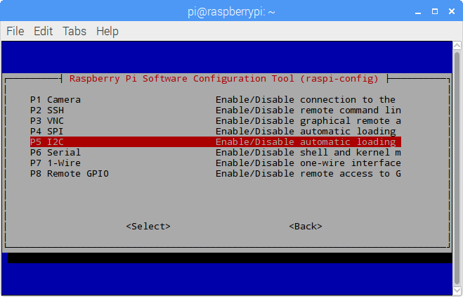
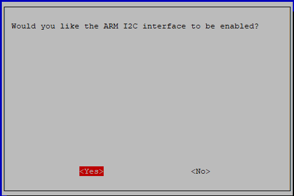

Note
Bonjour et bienvenue dans la Communauté Facebook des passionnés de Raspberry Pi, Arduino et ESP32 de SunFounder ! Plongez plus profondément dans l’univers des Raspberry Pi, Arduino et ESP32 avec d’autres passionnés.
Pourquoi rejoindre ?
Support d’experts : Résolvez les problèmes après-vente et les défis techniques avec l’aide de notre communauté et de notre équipe.
Apprendre et partager : Échangez des astuces et des tutoriels pour améliorer vos compétences.
Aperçus exclusifs : Accédez en avant-première aux annonces de nouveaux produits et aux aperçus.
Réductions spéciales : Profitez de réductions exclusives sur nos produits les plus récents.
Promotions festives et cadeaux : Participez à des cadeaux et des promotions de vacances.
👉 Prêt à explorer et à créer avec nous ? Cliquez [Ici] et rejoignez-nous aujourd’hui !
I2C Configuration
Étape 1 : Activez le port I2C de votre Raspberry Pi (Si vous l’avez déjà activé, passez cette étape ; si vous ne savez pas si cela a été fait, veuillez continuer).
sudo raspi-config
3 Options d’interfaçage

I4 I2C
<Yes>, then <Ok> -> <Finish>
Étape 2 : Vérifiez si les modules i2c sont chargés et actifs.
lsmod | grep i2c
Ensuite, les codes suivants apparaîtront (les numéros peuvent être différents), s’ils n’apparaissent pas, veuillez redémarrer le Raspberry Pi avec sudo reboot.
i2c_dev 6276 0
i2c_bcm2708 4121 0
Étape 3 : Installez i2c-tools.
sudo apt-get install i2c-tools
Étape 4 : Vérifiez l’adresse du périphérique I2C.
i2cdetect -y 1 # Pour Raspberry Pi 2 et versions ultérieures
i2cdetect -y 0 # Pour Raspberry Pi 1
pi@raspberrypi ~ $ i2cdetect -y 1
0 1 2 3 4 5 6 7 8 9 a b c d e f
00: -- -- -- -- -- -- -- -- -- -- -- -- --
10: -- -- -- -- -- -- -- -- -- -- -- -- -- -- -- --
20: -- -- -- -- -- -- -- -- -- -- -- -- -- -- -- --
30: -- -- -- -- -- -- -- -- -- -- -- -- -- -- -- --
40: -- -- -- -- -- -- -- -- 48 -- -- -- -- -- -- --
50: -- -- -- -- -- -- -- -- -- -- -- -- -- -- -- --
60: -- -- -- -- -- -- -- -- -- -- -- -- -- -- -- --
70: -- -- -- -- -- -- -- --
Si un périphérique I2C est connecté, l’adresse du périphérique sera affichée.
Étape 5 :
Pour les utilisateurs de langage C : Installez libi2c-dev.
sudo apt-get install libi2c-dev
Pour les utilisateurs de Python :
Activation de l’environnement virtuel.
Note
Avant l’activation, vous devez vous assurer que vous avez créé un environnement virtuel, veuillez consulter : Créer un environnement virtuel.
Chaque fois que vous redémarrez le Raspberry Pi, ou que vous ouvrez un nouveau terminal, vous devrez exécuter la commande suivante à nouveau pour activer l’environnement virtuel.
source myenv/bin/activate
Une fois l’environnement virtuel activé, vous verrez le nom de l’environnement avant l’invite de commande, indiquant que vous travaillez dans l’environnement virtuel.
Installez smbus pour I2C.
sudo pip3 install smbus2
Sortie de l’environnement virtuel.
Lorsque vous avez terminé votre travail et souhaitez quitter l’environnement virtuel, exécutez simplement :
deactivate
Cela vous ramènera à l’environnement Python global du système.